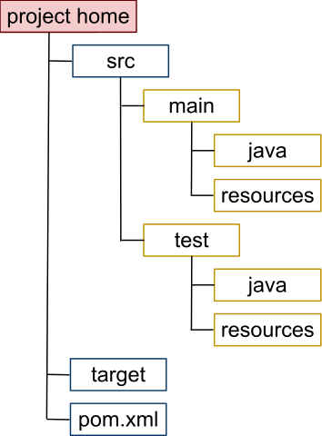

Spring Boot & co.
Spring?
The Spring Framework is an application framework and inversion of control container for the Java platform. (...)
The framework's core features can be used by any Java application, but there are extensions for building web applications on top of the Java EE platform.
Conventions?
What does the Spring framework do? Should I use it? Why or why not?
Convention...n
Convention over configuration
A software design paradigm which seeks to decrease the number of decisions that developers need to make, gaining simplicity, and not necessarily losing flexibility.
Spring Roo
Spring Roo provides an alternative, code-generation based approach at using convention-over-configuration to rapidly build applications in Java. (...) It focuses on:
Spring Boot
Spring Boot is Spring's convention-over-configuration solution for creating stand-alone, production-grade Spring based Applications that you can "just run". It takes an opinionated view of the Spring platform and third-party libraries so you can get started with minimum fuss.
Spring Boot CLI
$ spring help run
spring run - Run a spring groovy script
usage: spring run [options] <files> [--] [args]
Option Description
------ -----------
--autoconfigure [Boolean] Add autoconfigure compiler
transformations (default: true)
--classpath, -cp Additional classpath entries
-e, --edit Open the file with the default system
editor
--no-guess-dependencies Do not attempt to guess dependencies
--no-guess-imports Do not attempt to guess imports
-q, --quiet Quiet logging
-v, --verbose Verbose logging of dependency
resolution
--watch Watch the specified file for changes
$ spring help run
spring run - Run a spring groovy script
usage: spring run [options] <files> [--] [args]
Option Description
------ -----------
--autoconfigure [Boolean] Add autoconfigure compiler
transformations (default: true)
--classpath, -cp Additional classpath entries
-e, --edit Open the file with the default system
editor
--no-guess-dependencies Do not attempt to guess dependencies
--no-guess-imports Do not attempt to guess imports
-q, --quiet Quiet logging
-v, --verbose Verbose logging of dependency
resolution
--watch Watch the specified file for changes